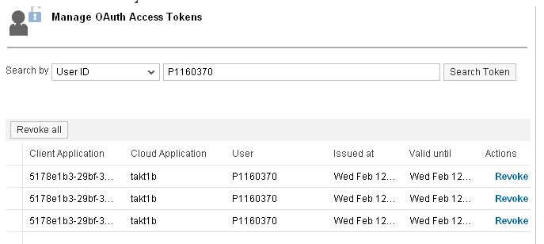
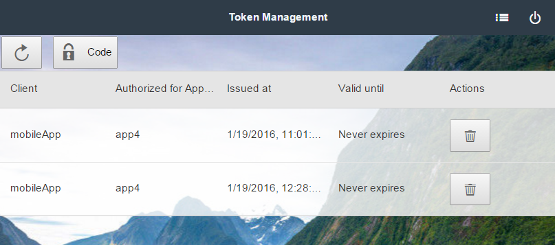
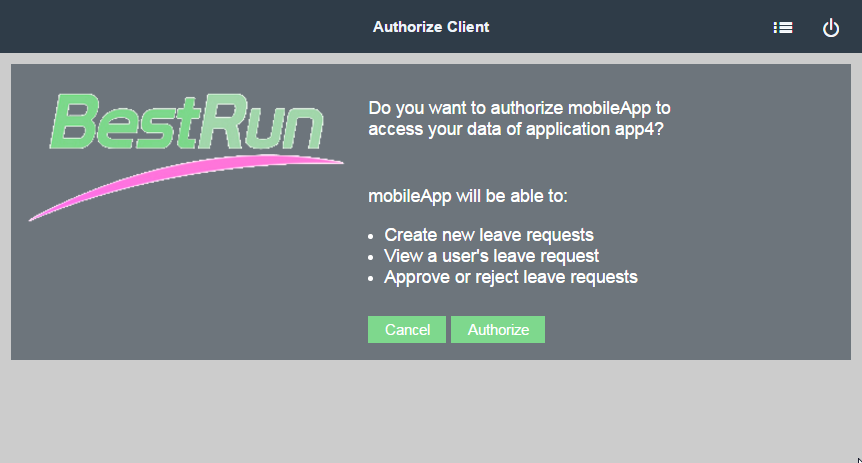

Configuring OAuth 2.0
Register clients, manage access tokens, configure scopes and perform other OAuth configuration tasks.
Prerequisites
- You have an account with administrator role in SAP Cloud Platform. See Account Member Roles.
- You have developed an OAuth-protected application (resource server). See Protecting Applications with OAuth 2.0.
- You have deployed the application on SAP Cloud Platform. See Deploying and Updating Applications.
Registering an OAuth Client
To authorize a device to access an OAuth-protected application, you need to register it as a client.
Procedure
-
In the
 Security
Security  OAuth
OAuth  section, go to the Clients tab.
section, go to the Clients tab.
Results
Defining OAuth Scopes
Define scopes for your OAuth-protected application to fine-grain the access rights to it.
Procedure
-
In the Applications Java Applications section, select the OAuth-protected application.
-
For the application, go to the Security OAuth Scopes section.
Revoking OAuth Access Tokens
With revoking access tokens, you can immediately reject access rights you have previously granted. You may wish to revoke an access token if you believe the token is be stolen, for example.
You may wish to revoke an access token if you believe the token is be stolen, for example. With revoking access tokens, you can immediately reject access rights you have previously granted.
- The Cockpit - an administrator user may use the Cockpit to revoke tokens on behalf of different end users
- The end user UI - an end user may access its tokens (and no other user's) and revoke the required using that UI
- In your Web browser, open the Cockpit.
- Go to the Security Authorizations Token section.
- Search for access tokens either by client ID or by user ID.
- Choose Revoke for the required tokens.

- In the Cockpit, choose the Security OAuth section, and go to the Branding tab.
- Click the End User UI link.You are now opening the end user UI in a new browser window. You can see all access tokens issued for the current user.
- Choose the Revoke button for the tokens to revoke.

Using a QR Code for Mobile Access
Use a QR code for easier copying of the OAuth authorization code on mobile devices.
Context
When your account is configured for trust with a corporate identity provider (IdP), it is often impossible to connect to the IdP directly using a personal mobile device. The corporate IdP is often part of a protected corporate network, which does not allow personal devices to access it. To facilitate OAuth authentication on mobile devices, you can use the end user UI's QR code generation option. It provides as a scannable QR code the authorization code sent by the OAuth authorization server.
Procedure
-
In the Cockpit, choose the Security OAuth Branding section.
Customizing Corporate Branding
You can customize the lookandfeel of the authorization page displayed to end users with your corporate branding. This will make it easier for them to recognize your organization.
Procedure
-
Go to the Security OAuth Branding section.
Results
